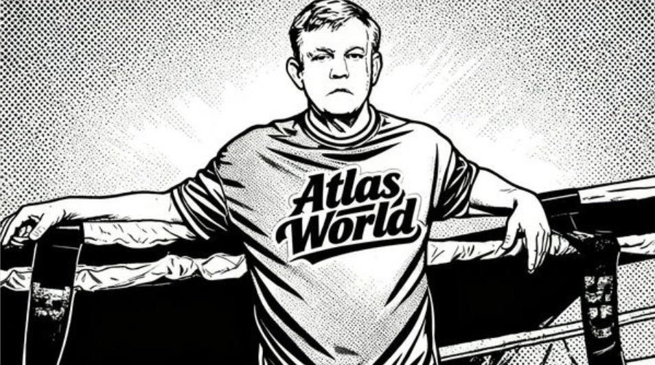
THE ROPES
The plan, in full — for Teddy and Teddy Jr
To create a facility and environment designed to improve your physical and mental condition by using training methods from boxing that are geared to burn calories, enhance cardio, increase strength, teach technique, and improve overall confidence. Our goal is for each person to leave knowing and feeling that they are prepared for whatever it is that they fight for.
Everything below is built to serve that mission directly — the room, the circuit, and the technology all pointed at the same goal.
Target: 3,000 sqft — meaningfully larger than 9Round's own footprint (their spec runs 1,500–2,500 sqft), so there's real room to add iPad infrastructure per station without cramping the circuit.
Criteria: New Jersey, near NYC, ideally near a train line, ideally near other gyms with an existing fight-sports following.
A sign at the entrance works like a menu — it lists every station and states "The Atlas Way" (or "The Champions Way") of training, so a first-time member knows the whole circuit before taking a step. Floor matting is built into the floor itself, not laid on top, for stability and safety. Each station is either roped off or outlined with painted lines marking its space, holding only the specific equipment that station needs. A smaller-than-regulation boxing ring in the middle of the room is a real possibility, not a requirement.
Target size: 3,000–3,500 sqft of open space — matches the range below.
This corridor hits every criterion with real evidence behind it, not just proximity math.
Alternative: 1 PATH Plaza has retail space literally inside a newly renovated PATH station, but the available units run larger (5,100+ sqft ground floor) — oversized for the target and further from the existing gym cluster.
Also checked: Hoboken and the waterfront. Real listings found there too (e.g. 74 Hudson St, 3,050 sqft at $78/sqft/yr), and Hoboken's transit is genuinely better — a true multimodal hub (PATH, NJ Transit, ferry, light rail all in one terminal, vs. Central Ave's HBLR-only access). But it runs roughly 2.7–3.3x the rent of Central Ave (likely $16,000–20,000/mo for a comparable space vs. $6,000/mo) and its combat-sports presence is thinner and more boutique-fitness (Rumble Boxing, CKO) rather than a real boxing/MMA cluster. Central Ave stays the pick — the rent gap is too large to justify for an unproven first location. Hoboken is worth revisiting later if this location succeeds and a second one makes sense.
Next step: this is as far as remote research can responsibly take it — touring 298/367 Central Ave with a broker is the actual next move.
Teddy Jr's own picks: Edgewater NJ, Red Bank NJ, Jersey City NJ, and Staten Island NY. Jersey City validates the pick above — here's honest research on the other three, ranked, not just validated across the board.
| Area | Real estate | Fight-gym presence | NYC transit |
|---|---|---|---|
| Edgewater, NJ | Real comps near target size (~$90/sqft/yr avg — 3x Central Ave) | Little Mac Boxing Gym on the same strip — real, not boutique | Best of the three: direct ferry to Midtown + free shuttle, ~20 min |
| Red Bank, NJ | Best price/size match (~$31/sqft/yr, 3,397 sqft avg) | Crosscut Boxing, several others — leans boutique-kickboxing | Weakest: NJ Transit rail, ~90 min to Penn Station |
| Staten Island, NY | No live listing pulled yet — real broker to call: Casandra Properties, (718) 720-0126, Staten Island–based, 40+ years in the market | Deepest bench of serious gyms (Ironhand, Iron Shepherd, Rustam's) — but that's also saturation risk | Free ferry, ~25 min — but only if the site is near St. George; most of the borough isn't |
Honest read: Jersey City Heights stays the pick. If it falls through, Edgewater is the clear #2 — fastest NYC connection, real comps, proven boxing-specific demand. Red Bank is #3 — cheapest, but furthest from the city. Staten Island is worth keeping on the list since Teddy Jr named it, but shouldn't get real diligence time before the other two are fully vetted — and if it does move forward, the entire NY legal section below applies instead of NJ's.
Real 3D — drag to rotate, scroll to zoom. Not a construction drawing; a first-pass feel for the room to react to.
A welcome video plays on entry — fight clips, corner speeches, the kind of footage that sets the room's tone before anyone touches a bag.
Earlier drafts of this page copied 9Round's 9-station structure as a proven placeholder. Teddy and Teddy Jr have since put their own 10-"Round" circuit on paper — this replaces the placeholder below, station for station, in their own words.
Each station is identified as a "Round," marked with a traditional round card and numeral, the same way a real fight card marks rounds between bells.
| Round | Name | What happens there |
|---|---|---|
| 1 | Legs | Four cones set up in the shape of a boxing ring. A video screen or iPad plays Teddy showing the footwork drill for that space. |
| 2 | Willy | A stationary, semicircle-shaped padded surface (representing a body) mounted to the wall — teaches proper punching and power using the Cus D'Amato numbering system. |
| 3 | Defense | A slip bag swinging back and forth to practice avoiding straight punches, plus a shoulder-height rope stretched across the space to learn weaving under hooks and round punches. |
| 4 | Shadow Boxing | Wall-to-wall mirrors — perfect your form while building cardio. |
| 5 | The Rope | Jump rope — one of the oldest, most traditional conditioning tools in the sport. |
| 6 | Resistance | Elastic bands anchored to the wall, each with a handle to grip and punch against. |
| 7 | Road Work | Treadmill, Stairmaster, or stationary bike (equipment TBD) — interval conditioning. |
| 8 | Speed | Hand-held 2–5 lb dumbbells for hand-speed drills, or a speed bag. |
| 9 | Pads | A trainer running basic pad work and drills — the real coaching the earlier "trainer-led station" placeholder pointed at. |
| 10 | Final Round | Heavy bag — putting the whole circuit together to finish. |
Each station has its own clock/bell on a timer, adjustable per station from 3 to 5 minutes depending on difficulty — not a fixed 3-minute round across the board. Same drop-in model as before: no reservations, room-wide rotation. Trainers work the floor with a microphone, calling out instructions and motivation by station number as they move.
An elevated platform, front or back of the room, is where Teddy addresses the whole floor directly — a short talk on what the session is built to accomplish and what actually stands between people and winning their own fights. Part of the regular room experience, not a one-time grand-opening moment.
The open question that drives everything else. 9Round's own real model has no instructional screens at all — just a live trainer and a room-wide bell — which is the honest baseline to compare every idea below against. None of these are picked yet:
Researched in real depth, tested against real footage. Two very different pieces:
Custom bag or glove sensors (gamified punch data, à la FightCamp) are real hardware — something that has to be built, tested, and can break or feel janky, which is a genuine cost most software ideas don't carry. Off-the-shelf heart-rate wearables (the MYZONE approach 9Round and Orangetheory actually use) are safer — mature, proven, nothing to build.
A voice clone of Teddy, built from his own YouTube and ESPN audio. In progress. Separate from — and much further along than — the video/talking-face idea above.
Teddy and Teddy Jr's own candidates, straight from their working list: Atlas World, The Ropes, The Ring, The Furnace, The Glove, The 12th Round, 12 Rounds, The Heat, The Flame, The Fire, Chamber of Truth, Teddy's Chamber of Truth, The Factory, The World of Fitness, Atlas' World of Fitness, There Comes a Time, No Excuses — plus three framed more like an academy than a gym: Training Academy, Performance Center, Learning Center, The Atlas Academy.
"Atlas World" is the working name used across this page — from Teddy and Teddy Jr's own list, and unlike "The Ropes" (also on their list), it doesn't collide with his existing teddyatlasboxing.com app of the same name. Still worth confirming directly with Teddy as the final pick before it's locked in.
Backup options if "Atlas World" doesn't stick: Firehouse Boxing, The Corner, Atlas Ring Co., Neutral Corner, Bell to Bell.
ATLAS APP
The tech running every station — camera tracking, punch counts, round timers, Teddy's own coaching. Working name only, not locked in — internally this is built as PunchVision.
Live and clickable — all three directions below, full-size. Screenshots underneath if you just want the fast version.
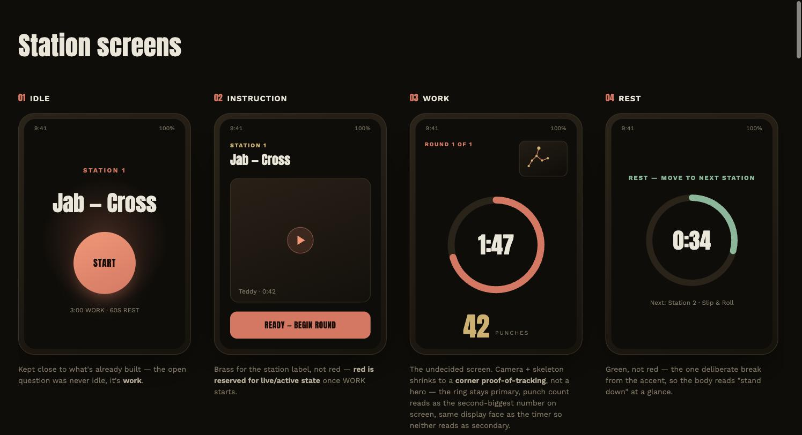
Concept A — Corner Voice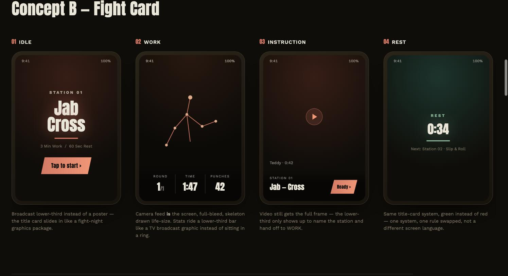
Concept B — Fight Card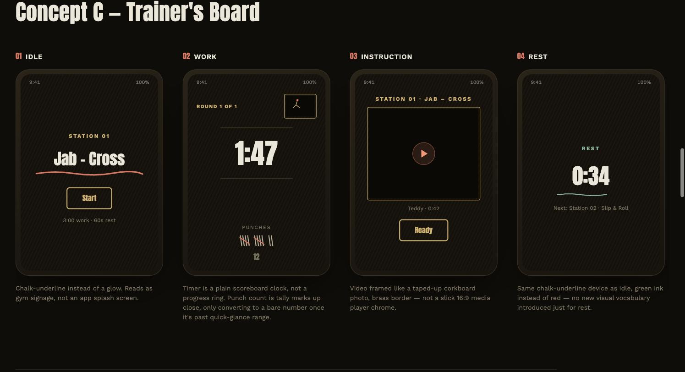
Concept C — Trainer's BoardUpdate (2026-07-28): the mockup (same link above) now also has a straight black/white/red recolor of Concept A side by side with the original, plus five named palette directions total (Ember/current, Corner Classic/B&W&red, Championship/oxblood+gold, Quiet Corner/grayscale+red-only-for-live, Ring Magazine/navy+cream+red) so the palette call is a real side-by-side instead of an abstract question. Nothing picked yet — that's still open.
An actual screen from the station app already running, captured off a real build.
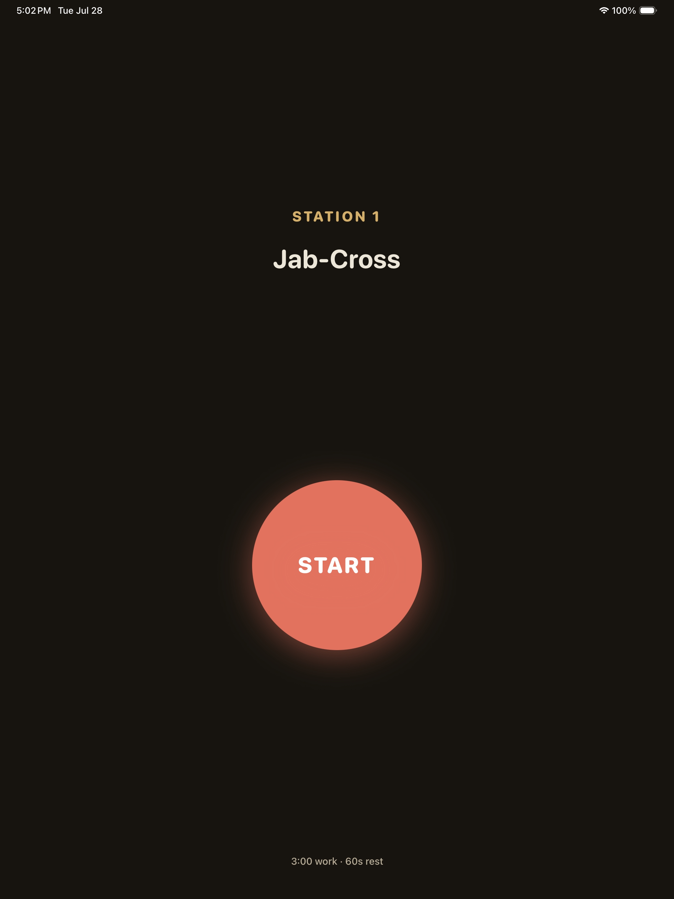
The lines on the guy hitting the bag are real skeleton tracking, running against actual test footage — not an animation.
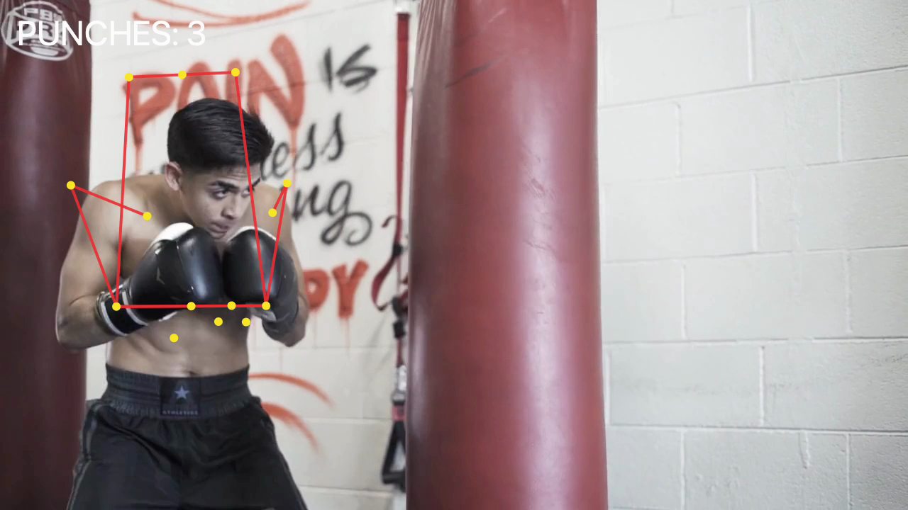
Real gym footage, live tracking overlay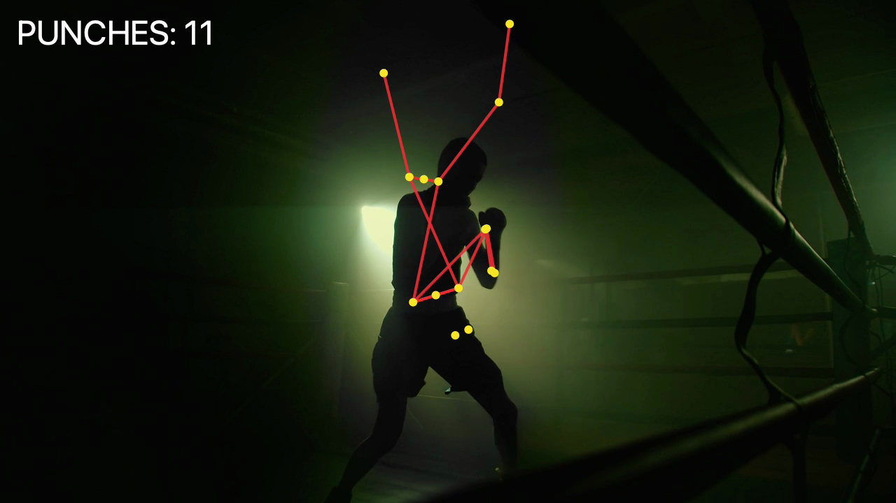
Dim lighting — tracking still holds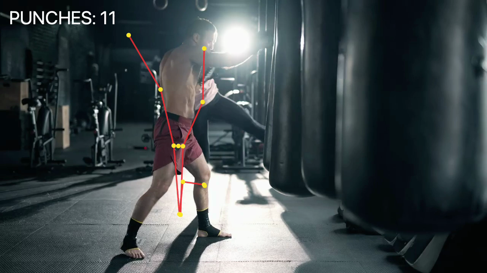
Full-body tracking, kickbox motion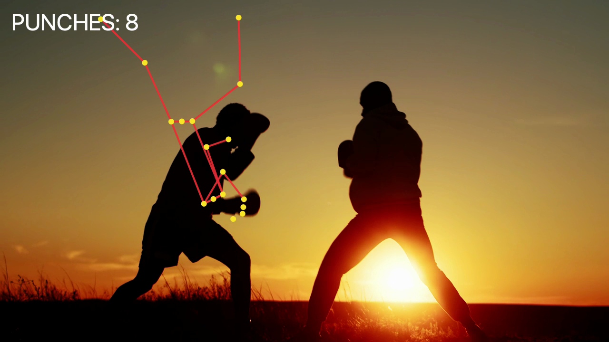
Two people, locked tracking on each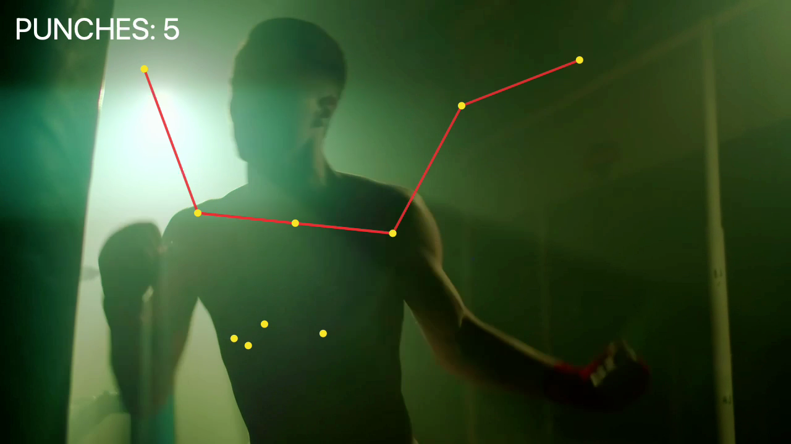
Fast flurry — no dropped framesThe punch-counting shown above isn't just a display number — it's the same raw data a leaderboard, streak counter, or combo/accuracy score would run on. This is a real, proven feature category, not a speculative add-on: FightCamp (a real, funded competitor already referenced elsewhere on this page) has shipped exactly this — in-studio leaderboards showing members' real-time scores, streak tracking round to round, a "Strike Power" feature giving dynamic visual scoring per strike, and an "Accuracy" feature giving immediate feedback on technique — all launched in 2025 and actively marketed as the reason to keep training with them.
The real difference: FightCamp's tracking requires buying their proprietary wrist trackers ($). This system tracks punches via camera alone — the same gamified layer (leaderboard, streaks, combo scoring) without hardware to sell or charge for separately. That's a genuine marketing angle: "the tracking FightCamp charges extra for, built into every station."
Would people use it? The honest answer is FightCamp's own product roadmap already answers this — they kept building more of this (three separate gamification features shipped across 2025 alone), which only makes sense if members are actually engaging with it. That's real market validation from a funded competitor, not a guess. What's not yet validated: whether this specific studio's members respond the same way — that's a real thing to test once the pop-up clinics run, not something to assume from a competitor's numbers.
Teddy already runs a paid digital product: teddyatlasboxing.com "The Ropes" (built on Circle) — $39.99/month, one membership tier, confirmed directly at checkout. It includes announcements, "Tips with Teddy," full video tutorials, Q&A/livestream events, community chat, a vote on which fights Teddy covers, fight picks with expert breakdowns, bookable 1-on-1 video call sessions with Teddy, and personal video feedback on submitted training/fight footage — a portion of proceeds benefits the Dr. Atlas Foundation. His podcast, THE FIGHT with Teddy Atlas, is free and ad-supported, distributed on YouTube, Apple Podcasts, and Spotify. Separately, real in-person 1-on-1 training with Teddy exists at a real, high price point — genuine premium-anchor material, not yet advertised anywhere in this plan.
Still the cleaner path, even without a naming collision: "Atlas World" doesn't collide with "The Ropes" the way the old working name did, but the underlying logic hasn't changed — building a second, separate app to recreate fight picks, community, and video coaching Teddy already runs elsewhere is real engineering effort duplicating a product that already works. The cleaner fix is still for them not to be separate products.
Don't recreate fight picks, community, or video coaching inside the gym's own app — that's real engineering effort competing with a product Teddy already runs. Instead, fold access to his existing platform into gym membership itself:
This is a smaller build than it sounds — a cross-subscription or promo-code arrangement with Teddy's existing Circle platform, not new app features to design and maintain.
There's real precedent for Teddy partnering externally like this — he already has an official Boxraw apparel line and already licenses instructional content to third-party retailers (BJJ Fanatics, Zengu). This isn't unprecedented, but nothing public addresses third-party app bundling specifically, so it needs a direct conversation with his team, not an assumption.
The "fight picks with expert breakdowns" line above isn't a hypothetical feature — it's real, structured content Teddy already publishes, and it already draws real public engagement tied specifically to that format, not just to his name generally. His own Instagram (@teddy_atlas, verified account, 213K followers — confirmed directly, 2026-08-11) posted about the Callum Walsh vs. Tyler Denny fight (Dublin, August 2026): his report on The Ropes predicted Walsh to win by decision, warned Walsh might get caught coming in early, and forecast head clashes — all of which happened, including an early clash that left Walsh fighting through a damaged eye on the way to a real, confirmed unanimous-decision win. Teddy's own caption called it "9-0 in the last month." The post drew 215 likes and 3 comments within a day of going up (confirmed directly, 2026-08-11) — real, current numbers, not an estimate.
Self-reported, not audited: that win streak is Teddy's own claim in his own caption, not an independently tracked record — a call, not a sourced number, the same caveat this page applies to its own pricing estimates elsewhere. The post and its engagement are real and verifiable; the accuracy record behind it isn't independently confirmed.
Why this earns an exception to "bundle, don't rebuild": the recommendation above — bundle access to teddyatlasboxing.com rather than recreate its features — still holds for the platform as a whole. But this one format has already proven, on its own, that it drives real attention. That's worth building as a distinct, named, premium feature natively inside the gym's own Atlas App, not just a link out to a separate site members have to leave the app to use.
Not designed yet. The premium-tab-concept.html mockup already sketches a "Fight Picks" screen pulling this feature in-app (Slot 2 of 3) — a real starting point, not a finished spec. Making the report format itself — the structured, scored breakdown, not just a picks list — a headline feature needs real product/UX work beyond that sketch, plus a direct conversation with Teddy's team about exposing this specific report format inside a second app when it currently lives only inside teddyatlasboxing.com.
Four things from Teddy and Teddy Jr's own outline that go beyond the station circuit itself — real program ideas, not yet built into the numbers below.
A nutrition service, class, or consultation available on-site — not designed yet, but on the list from day one rather than an afterthought.
Beyond the workout itself: seminars built around confidence and discipline — the kind of mental-game training that carries over into "all platforms and fields," not just the ring.
A track for elite athletes who want real training, and a separate kids' program — both explicitly on the table once the first location is proven out.
If the first gym succeeds, the plan is to open additional locations — the north star the "Testing It First" pop-up strategy and the revenue model below are both building toward, not a separate idea.
Before signing any lease: run a pop-up clinic at a gym Teddy already has real ties to, to build buzz and prove demand.
Brooklyn (DUMBO), the oldest active boxing gym in the US, since 1937. This isn't a cold outreach target — Teddy has a genuine, decades-documented history there, training fighters under the Cus D'Amato lineage going back to the 1980s. Gleason's also already runs a recurring guest-clinic program (Personal Trainer's Clinic, All Female Boxing Clinic, Masters Sparring Clinic) in a proven weekend format — 2 days, ~8 classes, priced as a package rather than hourly rental.
Typical cost for a name-trainer weekend clinic runs roughly $400–500/attendee, or hourly space rental elsewhere in NYC runs $250–1,000+/hr for name-brand gyms. A 6–12 week pre-sale waitlist campaign (100–150 "founding members" at a discount) is standard practice for validating real demand before committing to a lease.
Prep work that can start before the space is even secured, per the "sooner the better" priority.
New Jersey has a specific law (N.J.S.A. 56:8-39) covering any business devoting 40%+ of its space to fitness services — this gym qualifies. It requires registering with the NJ Division of Consumer Affairs before opening, and if memberships run longer than 3 months, posting a surety bond (10% of prior-year gross income, $25K–$50K floor/ceiling). Members also get a mandatory 3-day cancellation right. A month-to-month membership model with no long-term contracts sidesteps the bonding requirement — worth deciding the membership structure with this in mind, not as an afterthought.
Jersey City also requires a separate local Commerce Division business license beyond state registration, plus a Certificate of Occupancy for the fit-out.
New Jersey passed a law (effective January 2024, signed by Gov. Murphy) specifically banning health clubs from requiring an in-person visit to cancel when the club offers online sign-up — a member has to be able to cancel the same way they signed up. Since this plan already assumes online/app sign-up, an in-person-only cancellation policy would likely violate that law directly. This is why that policy isn't built into the plan as requested — worth a real conversation with the NJ attorney above before locking in cancellation terms, rather than defaulting to in-person-only.
| Requirement | New York | Confidence |
|---|---|---|
| LLC formation | $200 filing fee, NY Dept of State — plus a real extra step NJ doesn't have: publish notice in 2 newspapers designated by the county clerk for 6 consecutive weeks (LLC Law §206), then file a Certificate of Publication within 120 days ($50 fee) | High — confirmed directly from dos.ny.gov |
| Publication cost for Staten Island specifically | Historically $1,200–2,000+ in NYC counties (vs. a few hundred dollars in low-density counties) — no confirmed current figure for Richmond County | Low — call the Richmond County Clerk directly, (718) 675-7700, before budgeting this |
| Health club law | General Business Law Article 30 (§§620–629-A) — NOT the same law as NJ's. Pre-opening membership funds must sit in escrow (§622). Bonding is real and bigger than NJ's: $50K bond for terms up to 12 months, $75K for 13–24 months, $150K for 25–36 months (§622-a). Exempt if all dues are ≤$150/month. 3-business-day cancellation right (§624). | High — confirmed directly from statute text on nysenate.gov |
| NYC-specific add-on licensing (on top of state law) | Unconfirmed this pass — NYC's Dept of Consumer and Worker Protection may have its own health-club licensing layer | Low — verify directly at nyc.gov/dcwp before assuming NY State rules are the whole picture |
| NYC Dept of Buildings permitting speed vs. NJ municipal permitting | Reputation is that NYC DOB is slower/more expensive, but that wasn't verified with a primary source this pass | Low — treat as anecdotal, not a planning assumption |
Bottom line: the NY bonding requirement alone ($50–150K) is 2–3x NJ's ($25–50K), and the newspaper-publication step is a real cost and timeline item that simply doesn't exist in NJ. If Staten Island ever moves past "worth keeping on the list," redo this whole legal section for NY specifically rather than assuming the NJ steps transfer over.
| Item | Estimate |
|---|---|
| Rubber gym flooring, installed | $9,000–18,000 |
| Bags (heavy ×2, wrecking-ball, uppercut, double-end, speed) + mounting/rigging | $2,500–5,000 |
| Free weights (dumbbells, kettlebells, medicine balls) | $2,000–4,000 |
| iPads (9 stations + spares) + mounts | $4,500–7,000 |
| Front desk / reception setup | $2,000–5,000 |
| Signage, wall graphics, paint, lighting (blacklight fixtures add real cost here) | $5,000–15,000 |
| Sound system | $1,000–3,000 |
| Misc — jump ropes, ab mats, gloves/wraps for sale, first aid, locker room basics | $2,000–5,000 |
Equipment/furnishing total: roughly $28,000–62,000. Phasing this — opening with fewer stations fully equipped and adding the rest as revenue comes in — is a real way to reduce the upfront number.
This is separate from equipment above, and it's the single biggest unknown in the whole budget. Actual commercial buildout — electrical, HVAC, plumbing, walls — for a fitness space this size typically runs $50–150 per sqft, which on 3,000 sqft is $150,000–$240,000. That's before equipment.
Full range: roughly $286,150–461,625 — meaningfully more than $250K if the space needs real construction. The actual number depends entirely on the shell condition: if 298/367 Central Ave was previously a gym or dance studio (fitness-ready electrical/flooring already in place), buildout could land far below this range. If it's raw retail or office space, it likely exceeds $250K without a landlord tenant-improvement allowance or more capital. Getting a real contractor's buildout quote for the specific space is the single most important next step — bigger than any other number in this plan.
The $274,500–416,500 range above assumes a raw shell and a full day-one 9-station build. Four real levers compress that, each with a sourced or clearly-flagged confidence level:
| Lever | Effect | Confidence |
|---|---|---|
| Smaller footprint (3,000 → ~2,000 sqft) | 9Round's own real spec is 1,500–2,500 sqft — 3,000 was already above their own standard. Scaling down cuts buildout and equipment scope directly. | High — confirmed against 9Round's own franchise materials |
| Second-generation fitness space (was a gym/dance/fitness studio before) | Existing electrical, flooring, and plumbing already suited to fitness use — realistic buildout drops to roughly $25–75/sqft instead of $50–150/sqft | Moderate — reasoned from general commercial fit-out cost guides, not fitness-specific data. Confirm with a real contractor walkthrough. |
| Landlord Tenant Improvement (TI) allowance on a 5+ year lease | Realistic $15–35/sqft credit toward buildout for small retail in a secondary NJ market — a real boutique fitness studio in a comparable market negotiated exactly this | Good — multiple independent commercial real estate sources agree, including one directly comparable real example |
| Used/marketplace equipment for non-critical items | A real secondary market exists (several used commercial fitness equipment resellers found) — but no sourced discount %, so not counted in the numbers below | Low — real market exists, no verified discount to plug in yet |
Compressed range if the first three levers land: roughly $158,150–$289,625 total (12 months' rent $72,000 + deposit $18,000–36,000 + legal $6,500 + phased equipment on the smaller footprint $20,000–40,000 + net buildout after TI credit $30,000–90,000 + AED/utility deposits/ADA/cameras/background checks $11,650–45,125). That's real progress from $286,150–461,625, and the low end fits inside $250K with room left over — the ADA range is the single biggest swing factor in whether it does.
Getting the whole thing near $125K in construction/equipment specifically would require best-case results on every lever at once — not something to plan around, but not impossible either if 298/367 Central Ave turns out to have been a fitness space before. The honest move is the same as above: get a real contractor's quote and ask the landlord about a TI allowance before finalizing anything.
These weren't in earlier drafts of the buildout total — they're now included in the $286,150–461,625 (and compressed $158,150–289,625) ranges above, not sitting off to the side.
| Item | Cost | Confidence |
|---|---|---|
| AED (defibrillator) + staff CPR/AED certification | $1,400–2,200 — NJ law requires it on-site (N.J.S.A. 2A:62A-31), not optional | High — real statute, directly confirmed |
| Utility deposits (electric/gas/water) | $450–900 | Low — PSE&G publishes no fixed figure; call PSE&G Business Solutions (1-855-249-7734) for an actual quote |
| ADA-compliant bathroom + entrance | $8,000–38,000 — the single biggest swing factor, entirely dependent on the space's current condition | Moderate — contractor cost-estimator data, not a quote for this specific space |
| Security cameras (hardware + install) | $1,650–3,550 | Moderate — broker/vendor estimates |
| Background checks (initial ~5 hires) | $150–475 — Checkr's own pricing, $30–95/report | High — vendor's own published pricing page |
Total added: $11,650–45,125.
Recurring costs, separate from the one-time buildout above. These are what get subtracted from monthly revenue.
| Item | Monthly cost | Confidence |
|---|---|---|
| Rent | $6,000 (12 months' rent $72,000 ÷ 12, same figure as the buildout list above) | Estimate, not a signed lease |
| Membership software + POS (Zen Planner) | $99–348, point estimate $220 | Moderate–High |
| Music licensing (BMI/ASCAP or Soundtrack Your Brand) | $21–167, point estimate $94 | Low — secondary source, not BMI/ASCAP's own schedule |
| Property/contents insurance | ~$108 average (real range $29–1,250 depending on coverage tier) | Moderate — national broker averages, not NJ-specific |
| Commercial trash/recycling | $100–300, point estimate $200 | Moderate |
| Monitored alarm | $55+ (ADT's own entry-tier price) | High for the entry-tier figure |
| Workers' compensation insurance | Not a fixed number — NJ's gym class code rates at $1.29 per $100 of payroll. On a $60,000/yr payroll that's ~$65/mo; on $100,000/yr it's ~$108/mo. Add once a real staffing budget is set. | Moderate — rate confirmed, payroll base is not |
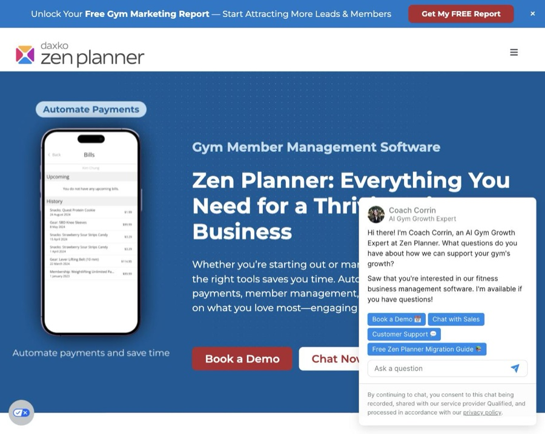
Zen Planner — real product screenshot, automated billingPoint-estimate total (excluding workers' comp, which needs a payroll figure first): ~$6,680/mo, real range roughly $6,300–7,900/mo.
Honest verdict first: there's no real way to auto-fill these. Every core NJ/Jersey City filing is a live government web form, not a downloadable fillable PDF, and none of them have a public API — checked GitHub directly, nothing exists for this. The AI-branded services (Rocket Lawyer, Firstbase, ZenBusiness, Clerky) are template generators with a human filing it for you, not automation — and for a plain single-state LLC like this, Reddit's small-business consensus is blunt: you don't need one, it's a 2-page form.
| Filing | Where |
|---|---|
| NJ Certificate of Formation | njportal.com/businessformation/home — $125, same-day |
| EIN (IRS SS-4) | irs.gov — free, instant, online interview tool. Skip any paid service offering to do this. |
| NJ-REG (tax/employer registration) | njportal.com/DOR/BusinessRegistration — file after the Certificate of Formation is approved |
| NJ Health Club Services Act registration | njconsumeraffairs.gov/healthclubs — also has a downloadable "Declaration of Exemption from Security Requirements" PDF, worth checking with a lawyer since month-to-month membership may qualify for exemption from the surety bond |
| Jersey City business license + Certificate of Occupancy | jcnj.org/permitportal (GovPilot) — Commerce Division for the license, Construction Code for the CO, plus a required NJ Division of Fire Safety inspection |
What's actually useful here: a pre-filled checklist of the exact values needed across every form (LLC name, registered agent name/address, NAICS code, business purpose language, principal address) so it's copy-paste into each portal instead of re-deriving it five times. Want that built as its own document once the name and registered agent are settled?
His audience skews national, not local — mostly not geographically near wherever the gym lands, which matters for how it gets used. Being newly independent from ESPN actually strengthens the pitch: no network exclusivity, and real incentive to build his own thing harder than ever.
Existing asset worth knowing about: he already sells a $97 structured boxing instructional product ("Fundamentals of Boxing") and, per the flag at the top of this page, already runs the teddyatlasboxing.com "The Ropes" app with tutorials, community, and paid coaching tiers.
| Idea | Real tool to use |
|---|---|
| Archive-mining / clipping | Descript or Otter.ai for transcription; Opus Clip or Vizard for auto-generating short clips from long-form video |
| Coaching Philosophy Codex | No special tool needed — a Claude Project (or ChatGPT custom GPT) with his transcripts loaded as reference material, used to keep any AI-assisted copy in his actual voice |
| Superfan geography mapping | Real but likely overkill for this stage — tools like Sprout Social or Brandwatch do this, but cost real money monthly. Worth skipping until there's an actual pop-up tour to plan around. |
| AI first-pass video evaluations | Ties directly to the computer-vision work already in progress on the app track — same technology, different use case |
| Scheduling/posting once content exists | Buffer or Later — standard, cheap, nothing fancy needed here |
Honest note: most of the real value here is the archive-mining idea (turning 1,800 existing videos into new content) — that's the one worth actually starting first, the rest are lower priority.
9Round's own franchise disclosure document does not include an Item 19 Financial Performance Representation — there's no official revenue benchmark to point to. Numbers below are built from direct competitor pricing plus industry break-even data, with confidence noted on each. Where something couldn't be sourced, that's said directly instead of guessed.
| Scenario | Revenue (membership + merch) | Rent + monthly opex | Left over before payroll |
|---|---|---|---|
| Conservative launch | ~$12,850/mo | ~$6,680/mo | ~$6,170/mo |
| Growth | ~$23,200/mo | ~$6,680/mo | ~$16,520/mo |
| Stabilized | ~$42,200/mo | ~$6,680/mo | ~$35,520/mo |
This is not final profit — it's revenue minus rent and the fixed operating costs below (software, insurance, trash, alarm, music licensing). The one number missing from this page entirely is staff payroll (front desk, part-time trainers) — nothing here estimates it yet, and for a business like this it's typically the single largest recurring cost after rent. Real profit = the "left over" figures above, minus payroll, minus workers' comp (which is itself a % of that payroll — see the operating-costs table below).
One-time cash needed to open: $158,150–289,625 compressed (see the buildout breakdown below), or $286,150–461,625 full scope. The low end of the compressed range fits inside $250K.
| Studio | Tier | Price | Confidence |
|---|---|---|---|
| Rumble Boxing, Jersey City | Standard monthly | $189/mo (~$170 w/ promo) | High — real JC location, reported via NJ.com |
| Title Boxing Club (national) | 4x/month | $69/mo | Medium — third-party aggregator |
| Title Boxing Club (national) | 8x/month | $99/mo | Medium |
| Title Boxing Club (national) | Unlimited | $129/mo | Medium |
| Title Boxing Club (large metro) | Unlimited | $139–199/mo | Medium |
| Title Boxing Club | Drop-in | $25 | Medium |
| 9Round (aggregator estimates) | Standard | $29–159/mo — sources conflict | Low — 9Round discloses no pricing itself |
Suggested pricing for Atlas World (a call, not a sourced number — positioned between Title's unlimited tier and Rumble's real JC price, since the AI punch-tracking tech and Teddy Jr's direct coaching are real differentiators neither competitor has): founding member (early, capped cohort) $99–119/mo unlimited · standard unlimited $159–179/mo · 8x/month $99–119/mo · drop-in $30–35 · 5-/10-class packs $125–150 / $220–240.
| Scenario | Members | Blended price/member/mo | Monthly revenue |
|---|---|---|---|
| Conservative launch (months 1–6) | 60–100 | $140–160 | $8,400–16,000 |
| Growth (months 6–12) | 100–180 | $145–165 | $14,500–29,700 |
| Stabilized (month 12–24+) | 200–300 | $150–170 | $30,000–51,000 |
Bars show the midpoint of each range above, not the full spread — see the table for the honest low–high.
Stabilized annualized: roughly $360,000–612,000/yr. These are built from boutique-studio break-even data (most break even around 75–150 members, or fewer at premium pricing) and typical ~70–80% annual retention — not from a sourced capacity model for this exact format. 9Round's drop-in-anytime structure (no fixed class times, unlike Rumble/Title) means capacity is limited by station count and hours open rather than class slots, but there's no sourced number for realistic daily throughput at this size — a real gap, worth testing directly once the pop-up clinics run.
Not invented: Teddy already has real branded apparel ("We Are Firemen. We Live In The Heat." hoodies) and an existing $97 "Fundamentals of Boxing" digital product — a physical location adds a retail line to sell what already exists, not a new product to develop. Teddy and Teddy Jr's own idea lines up directly with this: firemen-themed apparel plus original shirts with inspirational sayings. They floated Boxraw as a possible partner — real precedent already exists for that: Teddy already has an official "36 By Teddy Atlas" collection with Boxraw today.
| Scenario | Merch/retail revenue |
|---|---|
| Conservative launch | $500–800/mo |
| Growth | $800–1,400/mo |
| Stabilized | $1,400–2,000+/mo |
Sourced range ($500–2,000/mo "depending on member count and product selection") is a general boutique-gym benchmark, not specific to this studio or to Teddy's following — his existing audience (205K Instagram, 332K YouTube) is meaningfully larger than a typical independent studio owner's, so the real number could land above this range, but that's upside to test, not something to budget on. Adds roughly $6,000–24,000/yr on top of membership revenue across the three scenarios.
| Phase | Duration |
|---|---|
| Lease signed → permit application prep | 1–2 weeks |
| Permit plan review & issuance | 3–6 weeks (NJ UCC requires review within 20 business days of a complete application) |
| NJ Health Club Services Act registration + bond | File in parallel — no published turnaround; call NJ Consumer Affairs directly (see below) |
| Construction / buildout | 8–16 weeks |
| Inspections (fire marshal, building, Certificate of Occupancy) | 1–3 weeks, often overlapping final construction |
| Soft open (staff/trainer training, tech calibration, friends & family) | 1–2 weeks |
| Grand open | 1–4 weeks after soft open |
Realistic total: 3.5–6.5 months if permitting goes smoothly. Up to 4–8 months if municipal permitting hits delays — permitting is consistently flagged as the single biggest variable in small retail/personal-service buildout timelines, more than construction itself.
One thing to actually call and confirm before finalizing this plan: the NJ Health Club Services Act bond dollar amount and processing turnaround aren't published anywhere online — NJ Consumer Affairs' own page omits the figure. Call the Regulated Business Section directly: (973) 504-6370 or regulatedbusiness@dca.njoag.gov.
None of these should be the grand-opening target on their own — the timeline above starts counting from lease signing, which hasn't happened yet, so anything before roughly November 2026 is already too soon for a real buildout. But they're real, dated events worth knowing about, especially the one actually in New Jersey.
| Date | Event | Relevance |
|---|---|---|
| Sept 4, 2026 | Andy Ruiz Jr vs. Damian Knyba — Prudential Center, Newark, NJ (DAZN) | Too soon to be the opening, but it's literally in-state — real potential for a pop-up/marketing tie-in, not a launch date |
| Sept 12, 2026 | Ryan Garcia vs. Conor Benn — Las Vegas, WBC welterweight title | National attention, good content-calendar hook, too soon to open around |
| Sept 27, 2026 | Naoya Inoue vs. Kanshiro Nasukawa II — Tokyo | Too soon; international, lower local relevance |
| Oct 31, 2026 | Canelo Álvarez vs. Christian Mbilli — Riyadh, Saudi Arabia | Right at the edge of the fast-case timeline if lease signs immediately — still tight |
| November 2026 (exact date TBA) | Tyson Fury vs. Anthony Joshua — officially slated for November 2026 | The one worth actually watching. If the lease signs soon and buildout goes smoothly (the 3.5-month fast case), a November opening is aggressive but not impossible — this is the realistic aspirational target, not a promise. |
Honest read: given nothing is signed yet, a late-2026 opening tied to the Fury–Joshua card is the best real target to build toward, with the Newark card in September used for pre-launch buzz (pop-up clinic, social content, founding-member waitlist) rather than as the opening itself.